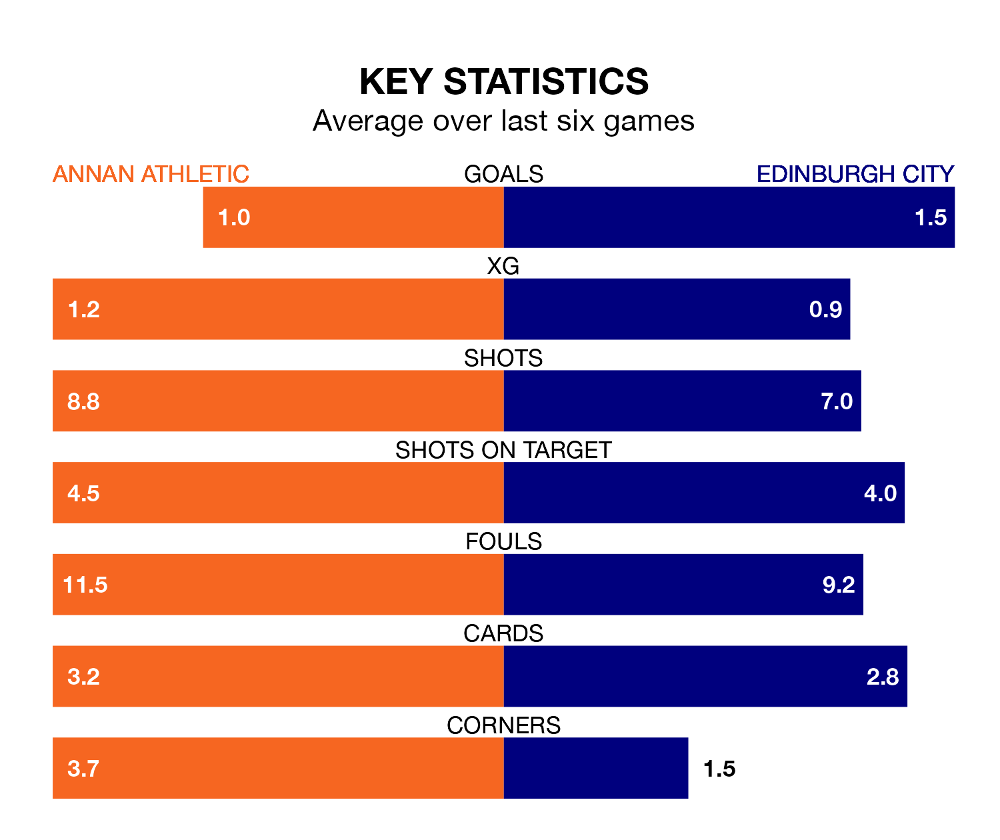

Saturday's match at Galabank sees the league's two bottom sides face each other, as Annan Athletic host rock-bottom Edinburgh City.
Annan have picked up 13 points from their first 13 League One games, with two wins and seven draws.
That is three points more than Edinburgh have collected, having won two and drawn four.
Annan are in bad form in League One, with no wins and three draws from their last six games.
But with no wins and a draw over that period, Edinburgh's form is even worse – they have taken one point from 18, compared to Athletic's three.
In the last 10 years, Annan and Edinburgh have played each other on 26 occasions. Annan won nine of them, Edinburgh 15, and they drew twice.
On average, the Galabankies scored 1.2 goals and Edinburgh 1.9 in those matches.
Their last meeting was on October 28, when Edinburgh won 3-2 at home.
With 24 goals in 20 games so far this season, the Galabankies are the league's second-lowest scorers with 1.2 goals per game. And they are conceding more than average, letting in 42 goals at a rate of 2.1 per game.
City are also below average scorers, with 1.4 goals per game, compared to a league average of 1.5. They have conceded 2.8 goals per game.
In Robert Mahon, the away side have one of the league's most on-form strikers so far this season. He has notched seven goals in 16 appearances, to sit fifth in the scoring charts.
His goal rate of one every 137 minutes is quicker than that of Thomas Goss, the hosts' top scorer with a goal every 215 minutes, and a total of six goals in 16 games.
Annan's last match was on January 13, a 1-1 draw against Kelty Hearts, with Goss getting the goal for the Galabankies.
Edinburgh drew 2-2 with Falkirk last time out, also on January 13, with Alieau Badra Faye and Callum Flatman on the scoresheet.
Updated: 08:51 (UTC), 25/01/24